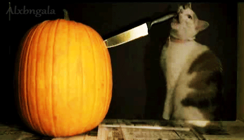
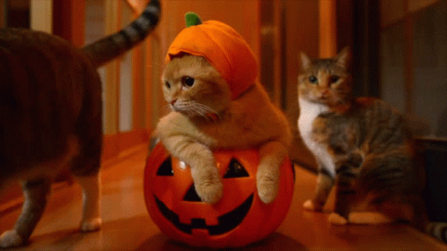

Pompoen carven
★ ★ ★ ★ ★
Een pompoen carven is een populaire bezigheid in de oktober maand, helemaal richting halloween. Hopelijk
heb je een kleine vriend om hiermee te helpen.
Zie hier tips voor het pompoen carven.
Link

Verkleedpartij
★ ★ ★ ★ ★
Wat is leuker dan op halloween verkleed te zijn samen met je kat. Een heks kan nou eenmaal niet zonder
haar trouwe metgezel.
Zie hier de top 10 beste halloween kostuums voor katten.
Link

Pumpkin pie
★ ★ ★ ★ ★
Nom nom, pompoen is lekker.
Zie hier een lekker recept voor pompoen taart om van te genieten terwijl je samen met je kat op de bank
onder een dekentje zit te kroelen.
Link